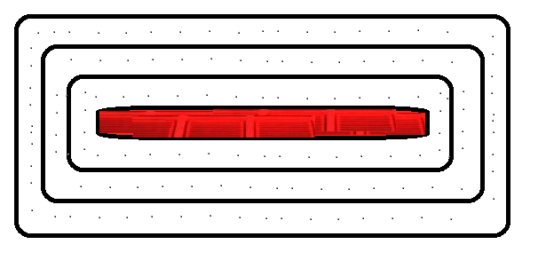

The technology of the future! Bring your computer to the air!
Though it may seem like a health hazard, the smoke is made from Glycerol, a harmless, commonly used vegetable glycerine.
7 LED Lasers to cover the light spectrum
Application to your existing periferals is as easy as plug-and-play. All the functionality of a monitor with less than a quarter of the bulk.
Endless!